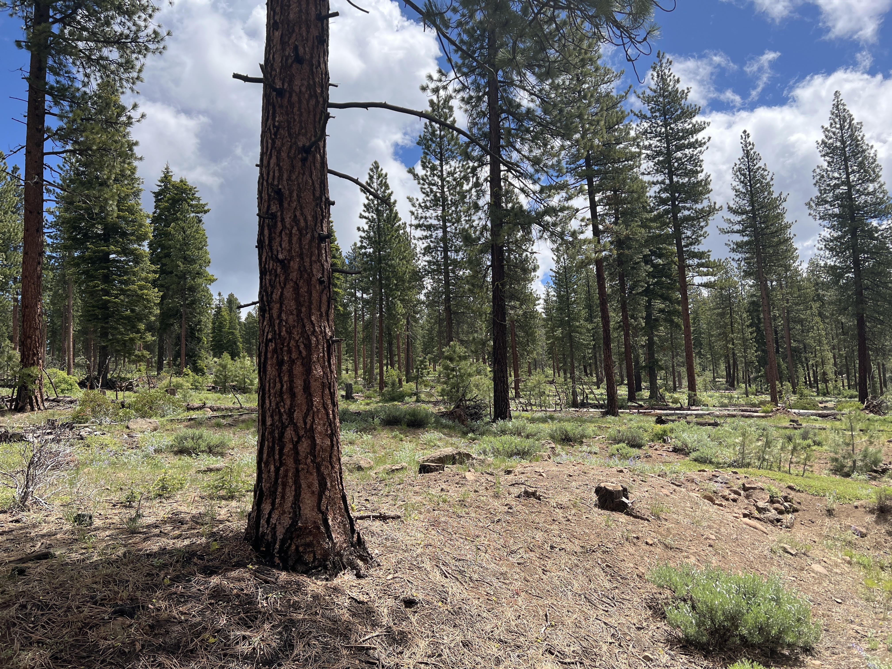

Welcome!#
To the Yuba County Forest Health Book. This book contains a final report on the activities completed for the Yuba Forest Health Project Phase I, generously funded by the Yuba Water Agency. The work was carried out by Keri Rinne, Vance Russell | 3point.xyz, Cherilyn Ashmead, and Allison Thomson | Yuba Watershed Protection and Fire Safe Council.
Executive Summary#
The Yuba FBA project generated several important findings and recommendations summarized in the findings and recommendations below.
Findings#
Fire. Although severe wildfires have not impacted Yuba County during the past few decades, large fires have occurred on nearly all sides. This may be due to a combination of luck and predominant vegetation types. Still, it has also given the County time to mitigate fire through priority roadsides and forest thinning projects. The northeastern portion of the county is a high-probability zone for future wildfires.
Capacity. Unlike neighboring Counties, Yuba County’s nonprofit and business capacity in the forest health sector is not high, and project implementers have had to rely on outside capacity to carry out projects.
Workforce. The lower forest health capacity in Yuba County is due to the need for an increased local workforce.
Communities. Rural communities, especially those in the northeastern portion of the county, are most vulnerable to wildfires due to their remote location, limited access to resources, longer evacuation distances, and possible lack of cell phone signal.
Water. Analysis of water infrastructure at risk showed the upper and lower watersheds at New Bullards Bar have a higher risk than the middle. Riparian areas are generally at high risk due to heavy vegetation growth and post-fire impact, such as hillside erosion due to steep slopes or treatment impacts to listed species. The area to the southeast of Collins Lake is at higher risk, but much surrounding the lake is at low risk. The land surrounding Lake Francis is at low risk, but much of the land to the east of the lake is at high risk. Englebright Dam and surrounding riparian areas are at high risk.
Biodiversity. The analysis found a similar trend of higher suitability moving uphill northeast in the county. There were two areas where species richness is higher at Texas Hill and south of Camptonville, where the listed species and fire index is higher.
Recommendations#
Prioritize building capacity of and hiring local businesses. Where they don’t exist or need more experience, work with companies that do and build local capacity while implementing projects with skilled contractors. Supporting local organizations and their projects as they build capacity and add scale will be crucial to long-term forest health. Many forest health entities and projects, such as the RCD or Camptonville Community Partnership, are in the startup phase and may need assistance building their organizational capacity as much as implementing projects
Establish treatment priorities to help reduce fire risk in key areas and economize landscape-scale investment. For example, focused treatment in riparian areas on the Yuba River between New Bullards Bar and Englebright Dam may reduce wildfire impacts and further impacts on water infrastructure and systems.
Create a large-scale public-private finance mechanism for long-term project funding. The Yuba Water Agency already supports the Yuba Forest Resilience Bond. To expand this effort, it may be worth pursuing similar collaborative finance opportunities that can leverage private and public funding for forest health and water infrastructure projects.
Table of Contents#
Links to book chapters are listed below and in the panel to the left. More details on each chapter are described in the overview chapter and by clicking the book link.
Jupyterbook#
The YWA book was developed with Jupyter books and is hosted for free and available at YWA book. In the upper right corner, you can view the repository online, download each chapter as a markdown or pdf file, switch to full-screen mode, and toggle between light and dark mode. A search function and links to the chapters are found in the left panel, and when in each chapter, a more detailed outline of the contents, with links to each section, is found in the right panel.
